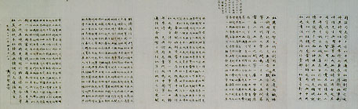

義助慰安婦
—— 李敖百件珍藏義賣藝術品（第17件）
品 名： A17. 戴傳賢中央社社史 預估價： 50 萬 成交價： 50 萬 說 明： 台北市松江路有一個國民黨中央通訊社，簡稱中央社，在六十多年前創辦，是國民黨宣傳機構，可是這段歷史國民黨並不太清楚。這幅是中央社創辦人戴傳賢寫給當了三十年社長蕭同茲的原件。在《中央社六十年》這本書談到了中央社創立史徵，該書是中央社印的；書中提到這件墨寶，但真正的原件卻在李敖手中。寫這毛筆字原件的人戴傳賢做了好多年的考試院院長。 1949 年國民黨兵敗如山倒，離開大陸時，有二位覺得沒有臉活下去而自殺，一位是前台北市副市長陳師孟的爺爺陳布雷，一位就是戴傳賢。──他有一個兒子不姓戴姓蔣，叫蔣緯國。
